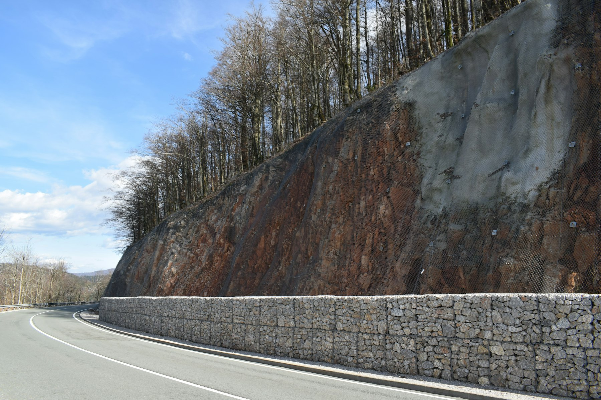
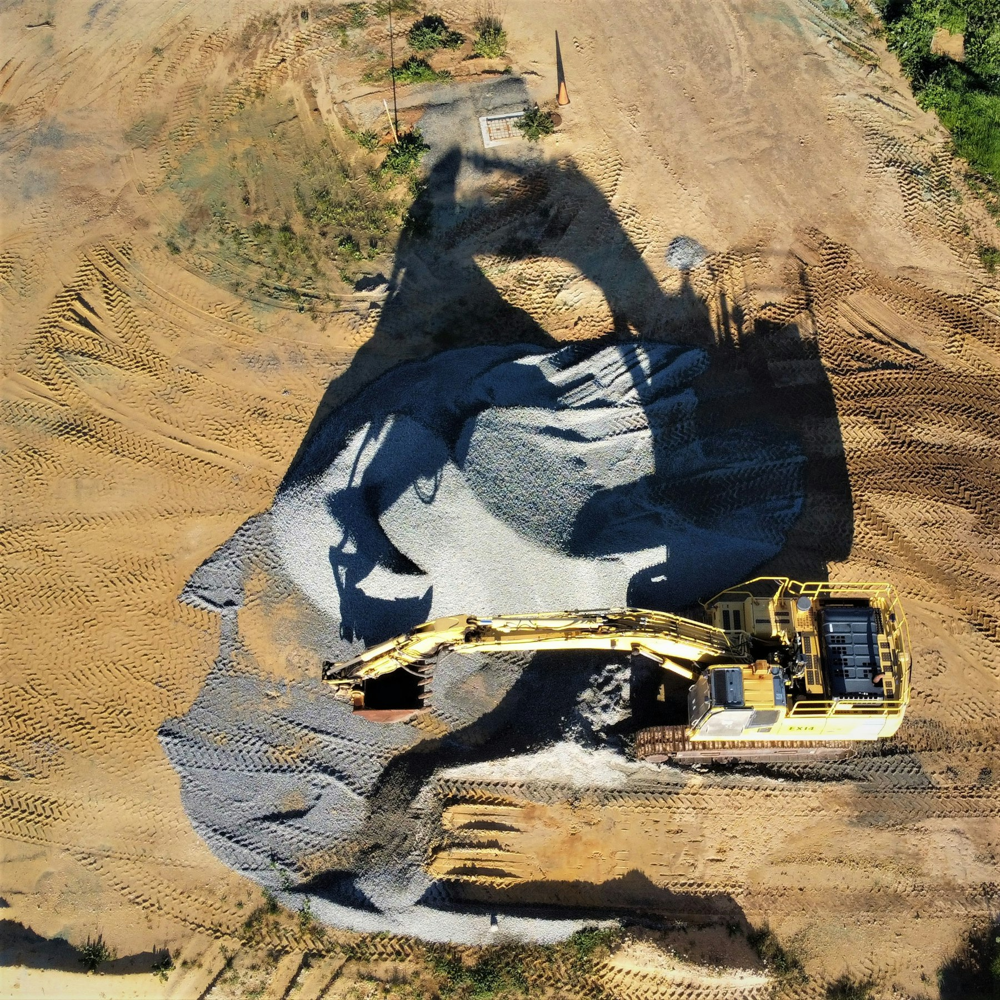

01
道を、つなぐ。
道路や法面など、地域の基盤を整える仕事を紹介するエリア。工事の目的や施工の流れを、写真と一緒に伝えます。
写真・内容はサンプルです

暮らしを支える、道と大地の仕事。
土木・建設の役割を伝えるデザインサンプルです。
毎日通る道。人が集まる場所。何気ない日常の風景を支える仕事を、一つずつわかりやすく。みどり路建設は架空の建設会社です。このページでは、土木の仕事と相談までの流れを紹介する構成をご覧いただけます。
工事の種類と役割が伝わる写真・文章の掲載例です。実際の施工実績を紹介するものではありません。
完成した風景だけでなく、そこに至る工程も伝える。作業の段取りや現場との向き合い方を、写真と文章で紹介します。
架空の事業紹介のため、固有の受賞・認証・施工件数は掲載していません。
ご相談の流れへ工事の場所や目的、ご希望の時期など、相談前に整理したい情報の例を案内します。
必要な確認事項と、検討の進め方を共有する流れを示します。
ご相談内容に合わせた計画と手順を説明する想定です。実際の工事の受付は行っていません。
会社情報のサンプル
ご相談の入口を、わかりやすく。